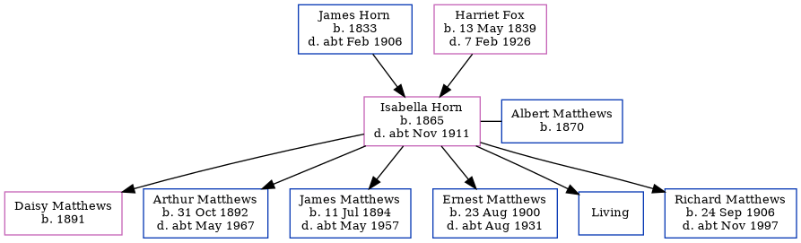

Isabella Matthews (née Horn) 1865 - c1911
[ Home ] | [ Calendar ] | [ Surnames Index ] | [ Family History ]The child of James Horn (a brewer's laborer) and Harriet Fox, Isabella Horn, the first cousin three-times-removed on the father's side of Nigel Horne, was born in Ramsgate, Kent, England in 18651 and married Albert Matthews (a mariner with whom she had 6 children: Daisy, Arthur Albert, James Charles, Ernest George, David and Richard Algernon, along with 1 surviving child) in Thanet, Kent, England around Oct 1889.
Throughout her life, Isabella lived in several places: at Hertford Cottage, Hertford Place in Ramsgate on Apr 2, 18713; on Chapel Road, St Lawrence in Thanet on Apr 3, 18811; and on 30 Royal Road in Ramsgate on Apr 2, 19114, when she was living with her brother, Arthur Albert sister-in-law, Ada Caroline Eleanor.
She died c. Nov 1911 in Thanet2.
Parents
- James was born in 1833
- Harriet Allen was born on May 13, 1839
Children
- Daisy was born in 1891
- Arthur Albert was born on Oct 31, 1892
- James Charles was born on Jul 11, 1894
- Ernest George was born on Aug 23, 1900
- Richard Algernon was born on Sep 24, 1906
Citations
- 1881 England, Wales & Scotland Census - Findmypast (was age 15 and the daughter of the head of the household)
- England & Wales deaths 1837-2007 - Findmypast
- 1871 England, Wales & Scotland Census - Findmypast (was age 4 and the daughter of the head of the household)
- 1911 Census for England & Wales - Findmypast (was age 44 and the wife of the head of the household)
Media
England & Wales deaths 1837-2007 - BMD/D/1911/4/AZ/000510/073
1911 Census for England & Wales - GBC/1911/RG14/04515/0293/2
1871 England, Wales & Scotland Census - GBC-1871-0014301286
Family Tree
Generated by Ged2Site. Last updated on Jul 20, 2025